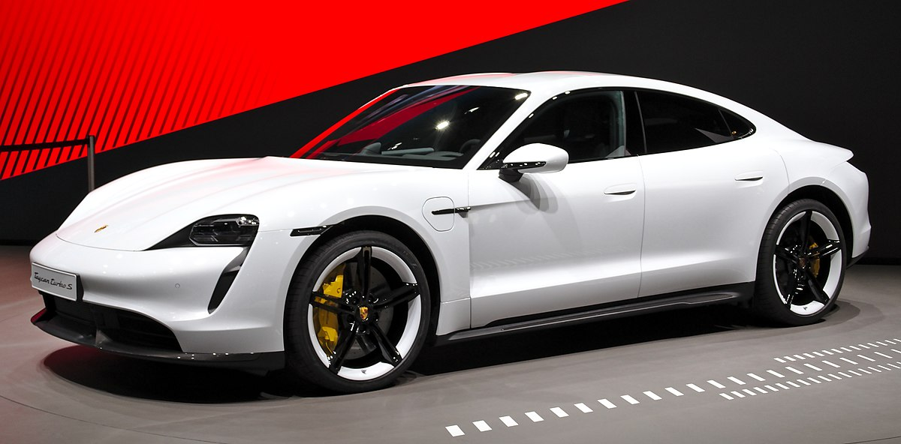

Dr. Ing. h.c. F. Porsche AG, kısaca Porsche AG veya sadece Porsche (okunuşu: Porşe) 1947 yılında Ferdinand Porsche'nın oğlu Ferry Porsche tarafından Stuttgart'ta kurulmuş olan spor araba firmasıdır. İlk modelleri 1948 yılında çıkan Porsche 356'dır. Ferdinand Porsche 356 tasarımını yaparken oğluna yardım etmiş ve 1951 yılında ölmüştür. 1963 yılında araba yarışlarında müthiş başarılar elde edecek Porsche 911'i piyasaya sunarlar. 6 silindirli, arkadan motorlu bir spor arabasıdır ve rallilerde de büyük başarılar kazanır.
| Anasayfa | 1 | 2 | 3 | 4 | 5 | 6 | 7 | 8 | 9 | 10 | 11 | 12 | 13 | 14 | 15 | 16 | 17 | 18 | 19 | 20 |